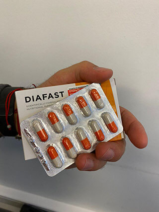
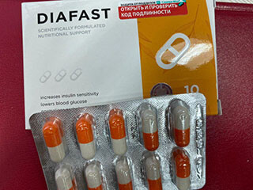

Спасение от диабета 2 типа для более чем 2 млн. россиян пытаются скрыть от населения! Видимо, нашим министрам не нужны здоровые люди, а нужны те, кто постоянно будет покупать таблетки!
Полнейший произвол на самом высоком уровне. Российские аптечные магнаты пытаются скрыть информацию о новом средстве от диабета, созданного в Институте биомедицинской химии на основе работы всемирно известного ученого, лауреата Нобелевской премии по физике, академика Жореса Алферова.
Примечательно, что новый способ лечения способен поставить жирную точку в борьбе человечества с диабетом второго типа. Как показали клинические исследования, а также опыт использования разработанного препарата пациентами Института диабета ФГБУ НМИЦ эндокринологии, он помогает полностью избавить человека от патологии на ранней и средней стадии, и значительно облегчить протекание болезни в запущенных случаях. Кроме того, этот новейший препарат помогает в 3-4 раза сократить дозу инсулина при диабете первого типа.
Это по-настоящему революционный препарат, признанный Международной федерацией эндокринологов. Однако в самой России – стране, где появился этот препарат, по всей видимости, он продаваться не будет. Потому что наши аптечные сети отказались от его реализации, при этом, не соизволив даже выдумать более-менее порядочную причину.
Хотя истинная причина и так всем ясна! Этот препарат способен нанести колоссальный вред их прибылям, поскольку продажа противодиабетических препаратов, по оценкам специалистов, приносит им до 40% общего дохода.
А теперь представьте, что все диабетики вдруг станут здоровыми! Для владельцев аптечных сетей это как страшный сон. Именно поэтому они стараются всеми силами не допустить распространение нового способа лечения в стране.
Что вообще происходит? Неужели у российских диабетиков так и не появится шанса наконец-то избавиться от измучившего их заболевания? И почему в ситуацию не вмешивается Министерство Здравоохранения России?
Известный российский академик, один из участников разработки нового способа лечения дал откровенное интервью нашему изданию.
- Не могли бы вы в подробностях рассказать о том, как и за счет чего разработанный вашим институтом способ помогает излечивать сахарный диабет второго типа?
- Да, конечно. В основе метода излечения лежит открытые еще в 80-х годах прошлого столетия механизмы диффузии в клетках через белковые альфа- и бета-каналы. Это свойство клеток впервые обнаружил советский физик – Жорес Иванович Алферов. Мало кто знает, но во многом благодаря работам этого ученого у человечества есть мобильные телефоны и компьютеры. Он считается отцом всей современной полупроводниковой электроники. Однако он занимался не только изучением свойств минералов, в частности, кремния (из которого состоят все полупроводники), но и живых материй, так как у СССР были планы по созданию биокомпьютеров.
Именно Жоресом Алферовым в те годы было впервые установлено, что у живых клеток имеются специальные белковые каналы, по которым внутрь клеток поступают различные вещества. Какое это имеет отношение к диабету второго типа? Постараюсь рассказать просто.
Насколько известно, основная причина сахарного диабета второго типа заключается в том, что наших органов теряют чувствительность к инсулину. Это называется инсулинорезистентностью.
Смотрите. Когда углеводная или белковая пища попадает в наш организм, в крови появляется много сахара. Поджелудочная железа в ответ на это начинает активно вырабатывать инсулин. Как только инсулин в крови повышается, это служит сигналом для клеток, чтобы они начали перерабатывать глюкозу в энергию.
Однако клетки в определенный момент (чаще всего это связано с возрастом человека) теряют способность реагировать на гормональный сигнал. К сожалению, на данный момент наука не в состоянии ответить на вопрос – почему это происходит. Однако она ответила на другой – в данном случае намного более важный. А именно – как вернуть клеткам способность реагировать на гормональные сигналы.
Оказалось, что в этом хорошо помогает обычный магний. Это еще в начале 2010 года установили американские ученые. Однако и здесь появилась загвоздка – клетку можно обеспечить магнием в лабораторных условиях, и она станет хорошо реагировать на инсулин. Но как это сделать на уровне организма?
И здесь как раз пригодилось знание механизмов диффузии в клетках через белковые каналы, открытые Алферовым. Эти каналы очень избирательны в пропуске веществ в клетку и, как оказалось, они хорошо реагируют не на сам магний (магний они не пропускают, так как молекула этого вещества слишком большая), а на его специальную форму, которая называется таурат магния (биоактивный хелат магния). По сути, этот тот же самый магний, но с меньшей молекулой. Если говорить грубо, то это магний, поделенный на 10 частей, то есть 10-я часть магния. Не буду вдаваться в сложную химию, скажу лишь, что этот тот же самый магний, но с повышенной биодоступностью.
Таким образом, если принимать это вещество, то клетки вновь приобретают способность реагировать на инсулин. Причем эта возможность к ним возвращается очень быстро – буквально за несколько дней регулярного приема. А что это значит для человека, страдающего сахарным диабетом второго типа? Это значит, что он МОЖЕТ ИЗБАВИТЬСЯ ОТ ДИАБЕТА ВСЕГО ЗА 3-7 ДНЕЙ РЕГУЛЯРНОГО ПРИЕМА.
Представляете, человек мучился от сахарного диабета годами, а теперь может избавиться от него так же просто, как от простуды.
- Проводились ли клинические испытания нового средства? Что они показали?
- Конечно. Клинические испытания являются важным этапом любой разработки медицинского средства. И нами они были проведены в году в полном объеме. Когда по истечении месяца мы подытожили и увидели их результаты, мы были приятно шокированы. Мы даже и предполагать не могли, что средство окажется настолько эффективным.
Открытый способ помог вылечить диабет у 96,2% испытуемых. Всего в исследованиях участвовало 1000 человек с сахарным диабетом. То есть 962 из них стали полностью здоровы. Что значит полностью? Это значит, их больше не тревожат такие симптомы, как хроническая усталость, снижение остроты зрения, долго заживающие раны, постоянный голод, частые позывы к мочеиспусканию. Их не мучают головные боли и онемение в конечностях.
Кроме того, им больше не надо опасаться развития таких опасных осложнений сахарного диабета, как: инсульт, инфаркт, слепота, пиелонефрит или, например, гангрена ног с последующей ампутацией.
Они освободились от всего этого и стали полностью здоровыми. В их жизни больше нет сахарного диабета. И ведь то же самое сможет сделать любой диабетик!
- Почему разработанное вами средство отказались реализовывать российские аптечные сети?
- Да потому что всеми аптечными сетями у нас владеют жадные до денег люди, а им плевать на диабетиков. Все, что их интересует – это деньги. Им намного выгоднее продавать то, за чем люди приходят регулярно. Представьте, какую выгоду они потеряют, если вдруг все 7 млн. диабетиков в России станут здоровыми!
Для урегулирования ситуации мы пробовали обращаться даже в Минздрав – высшую инстанцию в нашей стране. Написали им письмо еще 7 месяцев назад, когда препарат только появился, также сообщили о нем международному научному сообществу. В результате нашей разработкой заинтересовались многие другие европейские страны – Франция, Германия, Великобритания, Дания, Швеция, Финляндия и некоторые другие. А наши министры не удосужились даже написать нам ответ.
- Вы рассказали про способ лечения, но не рассказали о самом препарате. Что он собой представляет и как называется?
- Мы назвали препарат Diafast. Примерно на 60% он состоит из таурата магния. Помимо этого в состав препарата входит еще около 30 полезных при сахарном диабете витаминов, макро- и микроэлементов. Каждый компонент улучшает те или иные процессы в организме диабетика. Не буду рассказывать обо всех компонентах, расскажу лишь о некоторых.
|
Инулин |
Растительный полисахарид, который положительно влияет на углеводный и липидный обмен. Кроме того, инулин - это пребиотик, который способствует восстановлению нормальной микрофлоры кишечника и усиливает колонизационную резистентность кишечника, препятствуя размножению патогенных микроорганизмов. |
|
Альфа - липоевая кислота |
Улучшает чувствительность к инсулину и помогает справиться людям с сахарным диабетом с нейропатией - поражением нервов, вызванным сахарным диабетом. |
|
Хром |
Контролирует уровень глюкозы в крови, не давая ему подниматься выше нормы. |
|
Нативные концентраты семян расторопши, галеги, куркумы, бузины, одуванчика |
Улучшают состояние сосудов, предотвращая возникновение тромбов. Положительно воздействуют на все обменные процессы в организме. Понижают сахар в крови. |
То есть, как видите Diafast комплексный препарат, направленный не только на снижение инсулинорезистивности, но и на общее оздоровление организма.
Мы очень бы хотели излечить именно российских диабетиков, но вы видите, как обстоят дела.
- Если Diafast отказались продавать российские аптечные сети, означает ли это, что он будет недоступным для российских диабетиков?
- К сожалению, да. Мы, как институт не может заниматься продажами, мы просто не умеем это делать. И у нас нет никаких рычагов влияния на аптеки или на Минздрав. Поэтому, скорее всего, мы передадим свою разработку зарубежным коллегам. В Россию этот препарат, я думаю, не пропустят до тех пор, пока ситуация не поменяется кардинально. На самом деле, все это ужасно.
Но есть и хорошие новости. Хотя, конечно, относительно хорошие. Дело в том, что мы решили напоследок раздать БЕСПЛАТНО произведенную нами партию препарата тем, кто нуждается в нем. К сожалению, на всех препарата не хватит, но хотя бы этим шагом мы излечим небольшую часть больных. Все, что нужно сделать человеку, чтобы получить Diafast, это перейти на официальный сайт нашего института и оставить свои контактные данные. Для получения препарата не требуется никаких справок. Выписать его может любой желающий.
Мы раздаем Diafast уже 3 месяца и за это время препарат заказали уже более 1500 диабетиков. Всех, кто получил препарат, мы просим пройти опрос и рассказать, помог ли им Diafast вылечить сахарный диабет. Хочу показать вам результаты опроса на данный момент. Они еще раз подтверждают высокую эффективность нашего препарата.
- Препарат помог, диабет прошел полностью – 94,8% опрошенных
- Препарат помог частично, диабет прошел не полностью, но стало заметно лучше – 4,4% опрошенных
- Препарат не помог – 0,3% опрошенных
- Затрудняюсь ответить – 0,5% опрошенных
- Как долго будет раздаваться препарат? Ведь БЕСПЛАТНО его, наверное, готовы выписать многие?
- На данный момент у нас осталось меньше четвертой части произведенной нами партии. Надолго этого объема не хватит. Поскольку в последнее время все больше диабетиков выписывают препарат – наверное, узнают от знакомых о великолепных свойствах Diafast.
То есть закончиться он может в любой момент, поэтому всем диабетикам, кто хотел бы излечиться от сахарного диабета второго типа, я бы рекомендовал отправить нам заявку как можно раньше, пока он еще есть в наличии. Второго такого шанса на излечение от сахарного диабета второго типа уже может не быть.
От редакции:
Для того чтобы бесплатно получить Diafast необходимо:
- Перейти на официальный сайт нашего института, указав свой номер телефона, и нажать на кнопку «Получить Diafast».
- После отправки заявки вам перезвонит сотрудник ИБМХ. Ему необходимо описать имеющиеся у вас симптомы диабета и историю болезни. Эта информация необходима для того, чтобы врач смог составить для вас адекватное лечение препаратом Diafast. Также врачу необходимо сказать адрес доставки.
- Через 3-5 дней нужно будет прийти на почту и получить препарат.
Комментарии
Станислава Филатова, г. {{location.name}}
Сегодня заказала Diafast. Буду им лечиться, от диабета уже устала!
Вадим Щербаков, г. Омск
Интересно. Спасибо. Краем уха уже слышал об этом препарате. Знакомый его хвалил. Ему очень хорошо он помог.
Егор Костюхин, г. Казань
Ваш препарат просто великолепен!! Я один из тех, кто уже его попробовал. Сахар нормализовался. Жажда пропала, сухость во рту тоже, в туалет часто бегать перестал, перестала кружиться голова. Сахар проверял после курса каждый день – не повышался. Прошло уже 2 месяца после лечения. Чувствую себя здоровым человеком.
Петр Р., г. Красноярск
Оставил заявку. К счастью, пока еще есть. Буду лечиться. Узнал о вашей статье на одном из форумов. Там активное осуждение и многие хвалят Diafast
Максим Кузьмин, г. Тула
Спасибо за статью. Попробовал Diafast. Великолепный препарат!
Виктор П., г. {{location.name}}
Всем привет. Меня зовут Виктор, мне 59 лет, начальный вес 124 кг, вес на сегодня – 80 кг, рост 168 см. Уровень глюкозы колебался от 18 до 12,было и 29. Сейчас - 5,0. Принимал Diafast 3 месяца. Результатом более чем доволен. Никакие лекарства мне так не помогали.

Виктор Третьяков, г. Тюмень
До конца сомневался, что будет БЕСПЛАТНО. Думал, что какая-то замануха. Но препарат уже у меня (начал принимать) и не заплатил за него ни копейки. Вчера получил его на почте.
Нина Васильева, г. Санкт-Петербург
Соседка снизу принимала такой препарат. Как то с ней разговорились, она сказала. Ей очень хорошо он помог тоже. Не знаю, прошел диабет или нет, но рассказывала о Diafast взахлеб. Очень его хвалила.
Надежда Михайловна, г. {{location.name}}
А что же будет дальше, когда эта партию закончится? Неужели Минздрав не вмешается? Очень страшно быть диабетиком в нашей стране. У меня после приема Diafast диабет прошел. Но вдруг он появится снова, как тогда его лечить? Пока запаслась препаратом, но у него ведь тоже есть срок годности
Владислав Амосов, г. Москва
Спасибо за рекомендации. Выписал Diafast
Елена Смолова, г. Магнитогорск
Тоже есть опыт использования капсул Diafast и тоже положительный. Все выше про него правда. И то, что в аптеках у нас продается всякий мусор, тоже правда. Знакомый фармацевтом работает. Говорил, что у нас продаются все препараты 30-летней давности, которые толком не помогают.
Генадий Ставропольский, г. Самара
Это действительно что-то с чем-то! Принимаю Diafast всего вторую неделю. Так хорошо себя не чувствовал очень давно. Сахар нормализовался уже на следующий день после начала приема.
Ольга Кочеткова, г. Ижевск
Спасибо!
Марина В, г. Москва
Ужас, что творится с этими аптеками сегодня. Продают только старые и бесполезные лекарства. Не только от диабетика, но и других болезней лечиться нечем! Спасибо, что хоть вы делаете людям добро!